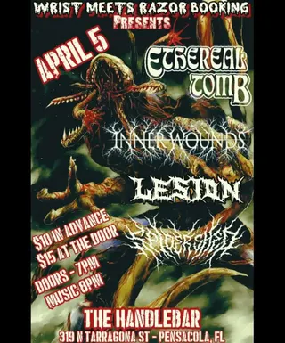

Lesion
on tourtouring / out-of-town band
8 shows on the diypensacola record since 2025
on the record since January 2025, first seen at subculture on a bill with burn absolute and coma waves. most recently at the-den, July 2026.
- first playedJan 25, 2025 · subculture
- most played atsubculture ×3 shows
- busiest year2026 · 4 shows
- biggest lineup12 acts · May 2025
flyer wall
 Jul 4, 2026 · the-den
Jul 4, 2026 · the-den Jun 13, 2026 · the-den
Jun 13, 2026 · the-den
Apr 5, 2026 · the handlebar Feb 20, 2026 · the den
Feb 20, 2026 · the den Nov 21, 2025 · betty's
Nov 21, 2025 · betty's May 31, 2025 · subculture
May 31, 2025 · subculture Mar 28, 2025 · subculture
Mar 28, 2025 · subculture Jan 25, 2025 · subculture
Jan 25, 2025 · subculturepast shows
- 2026
- 4Jul 2026Lesionthe-den
- 13Jun 2026Mario Judah, Lesion, Cdd, Morethe-den
- 5Apr 2026Ethereal Tomb, Innerwounds, Lesion, Spidershedthe handlebar
- 20Feb 2026430 Steps, Lesion, Outlook Bleak, Sungrazthe den
- 2025
- 21Nov 2025Radio Decay, Other, Anemony, Cursed Body, Lesion, Pauper's Grave, Cookies & Cakebetty's
- 31May 2025Fatejacket, Conflict Of Interest, Chasses, Broke Florida Boys, Lord Fish Face, Brax, D-mo, Liyo Nasty, Sneauxmane, Downer850, Lesion, Suburban Boyzsubculture
- 28Mar 2025Lesion, Infernem, Hemolacria, Face Of Relief, Selapack, Xenjay, Versye, Always Violentsubculture
- 25Jan 2025Burn Absolute, Coma Waves, Sleeptalker, Lesionsubculture
shared bills with
430 stepsalways violentanemonybraxbroke florida boysburn absolutecddchassescoma wavesconflict of interestcookies & cakecursed body
act pages are built automatically from the show archive, so something may be off: a misspelled name, a missing link, the wrong type, or a bad local/touring call. no disrespect meant. wrong on any of that, or want a listen link (youtube or bandcamp) or live footage added? send it in.